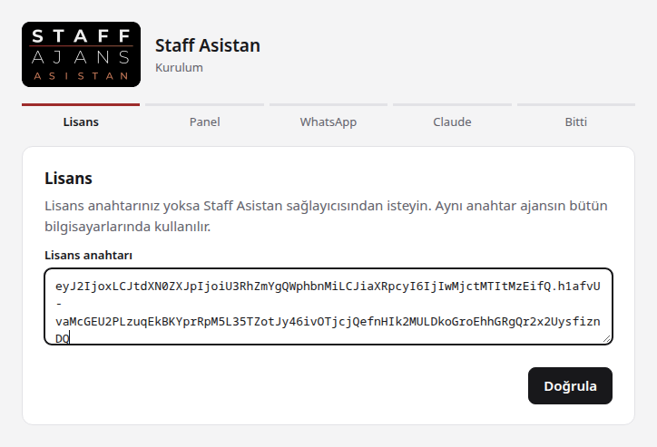
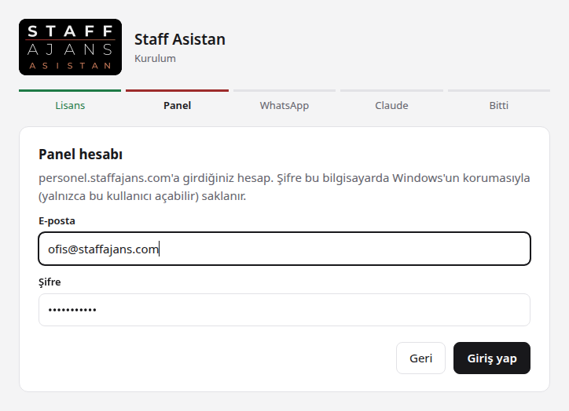
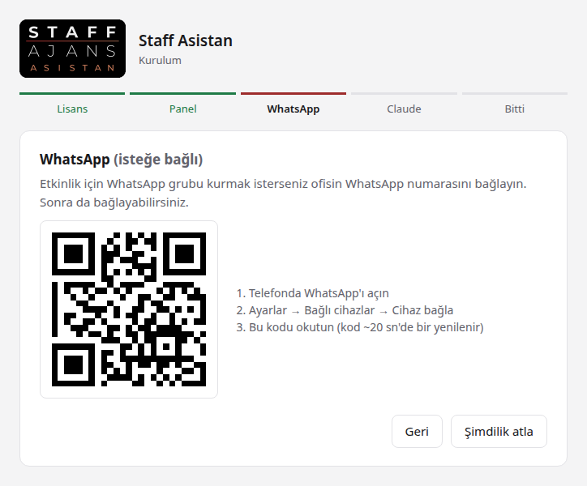
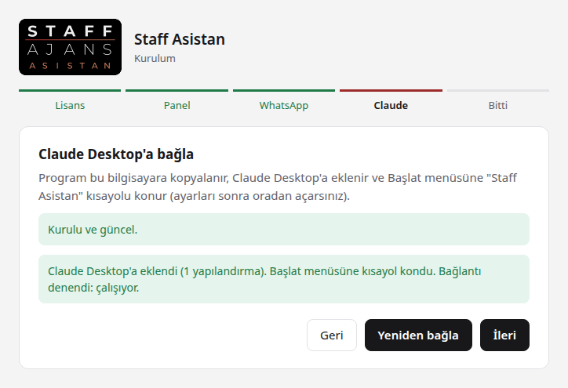
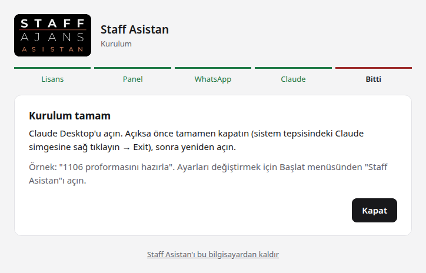
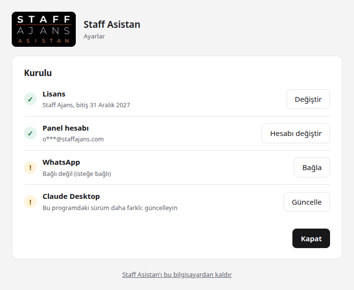
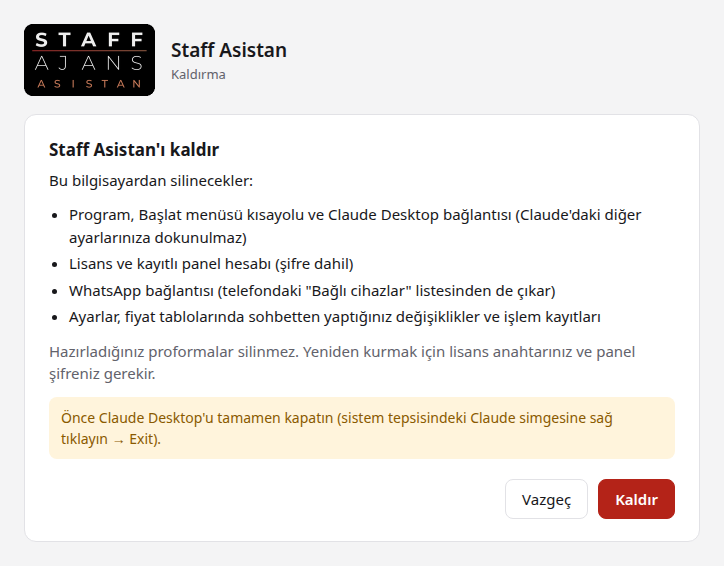

Başlamadan önce
- Claude Desktop kurulu ve hesabınızla giriş yapılmış olmalı.
- Lisans anahtarınız (Staff Asistan sağlayıcısından alınır; ajansın bütün bilgisayarlarında aynı anahtar kullanılır).
- personel.staffajans.com hesabınızın e-postası ve şifresi.
Kurulum
İndirin
Yukarıdaki İndir düğmesine basın. Edge "yaygın olarak indirilmiyor" derse dosyanın yanındaki … düğmesine basın, Sakla'yı seçin, sonra Daha fazla göster → Yine de sakla.
Çalıştırın
İndirilen StaffAsistan.exe dosyasına çift tıklayın. "Windows kişisel bilgisayarınızı korudu" çıkarsa Ek bilgi → Yine de çalıştır. Kurulum penceresi açılır.
Lisans anahtarı
Size verilen lisans anahtarını yapıştırın ve Doğrula'ya basın.

Panel hesabı
personel.staffajans.com'a girdiğiniz e-posta ve şifreyi yazıp Giriş yap'a basın. Şifre yalnızca bu bilgisayarda, Windows'un korumasıyla saklanır.

WhatsApp (isteğe bağlı)
Etkinlikler için WhatsApp grubu kurmak istiyorsanız ofisin WhatsApp numarasını bağlayın: QR ile bağla'ya basın, telefonda WhatsApp → Ayarlar → Bağlı cihazlar → Cihaz bağla ile kodu okutun. İstemiyorsanız Şimdilik atla; sonra da bağlayabilirsiniz.

Claude Desktop'a bağlayın
Kur ve bağla'ya basın. Program bilgisayara kopyalanır, Claude Desktop'a eklenir ve Başlat menüsüne "Staff Asistan" kısayolu konur. "Bağlantı denendi: çalışıyor" yazınca İleri.

Claude Desktop'u yeniden açın
Claude Desktop açıksa tamamen kapatın: saatin yanındaki sistem tepsisinde Claude simgesine sağ tıklayın → Exit. Sonra yeniden açın ve deneyin, örneğin: "1106 proformasını hazırla".
İndirdiğiniz dosyayı artık silebilirsiniz; program kendi kopyasıyla çalışır.

Güncelleme
Yeni sürüm çıktığında:
- Bu sayfadan yeni dosyayı indirin.
- Claude Desktop'u tamamen kapatın (sistem tepsisi → Claude → Exit).
- İndirilen dosyaya çift tıklayın; açılan pencerede Claude Desktop satırındaki Güncelle'ye basın.
- Claude Desktop'u açın.
Lisans, panel hesabı ve WhatsApp bağlantısı olduğu gibi kalır.

Bu sürümde neler değişti
Ayarları değiştirme
Başlat menüsünden Staff Asistan'ı açın. Lisans anahtarı, panel hesabı ve WhatsApp numarası buradan değiştirilir.
Değişiklikten sonra Claude Desktop'u tamamen kapatıp yeniden açın.
Kaldırma
Önce Claude Desktop'u tamamen kapatın. Sonra Ayarlar → Uygulamalar → Yüklü uygulamalar → Staff Asistan → Kaldır. Ya da Başlat menüsünden Staff Asistan'ı açıp en alttaki "Staff Asistan'ı bu bilgisayardan kaldır" bağlantısına basın.
Hazırladığınız proformalar silinmez.

Sorun giderme
Edge ya da Windows dosyayı açmama izin vermiyor
Program yeni ve yaygın olmadığı için Windows uyarı verir. Dosyayı yalnızca bu sayfadan indirdiyseniz: Edge'de … → Sakla → Daha fazla göster → Yine de sakla; açarken Ek bilgi → Yine de çalıştır.
Claude Desktop'ta Staff Asistan görünmüyor
Claude Desktop'u pencereyi kapatarak değil, sistem tepsisinden Exit ile kapatıp yeniden açın. Olmazsa Başlat menüsünden Staff Asistan'ı açın ve Claude Desktop satırında Bağla ya da Güncelle'ye basın.
Güncelle "dosya kullanımda" hatası veriyor
Claude Desktop hâlâ açık. Sistem tepsisinden Exit ile kapatıp Tekrar dene'ye basın.
"Lisans süresi doldu" yazıyor
Staff Asistan sağlayıcısından yeni lisans anahtarı isteyin. Başlat menüsü → Staff Asistan → Lisans satırında Değiştir.
Panel şifresi değişti
Başlat menüsü → Staff Asistan → Panel hesabı satırında Hesabı değiştir.